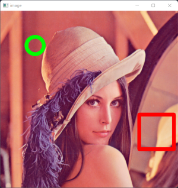
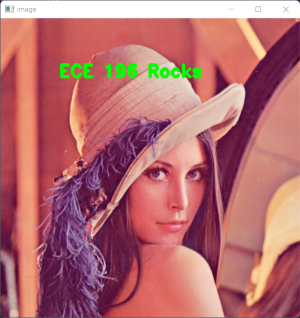
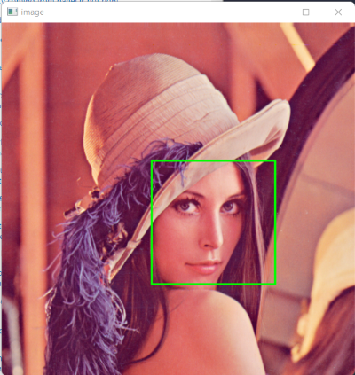
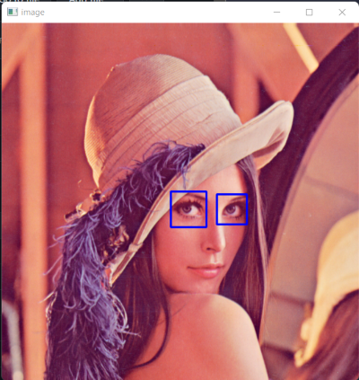
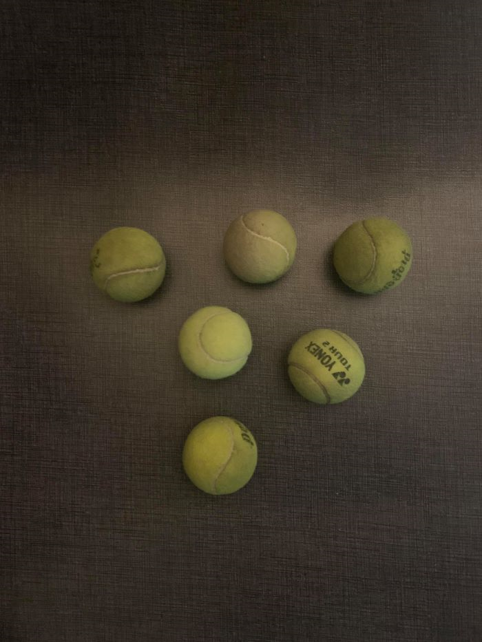
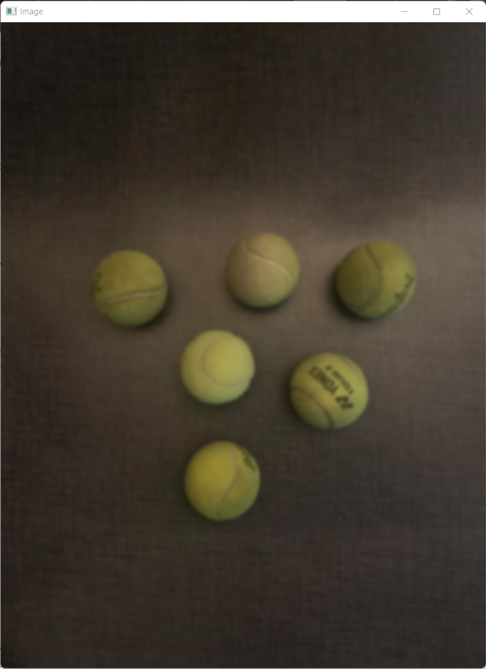
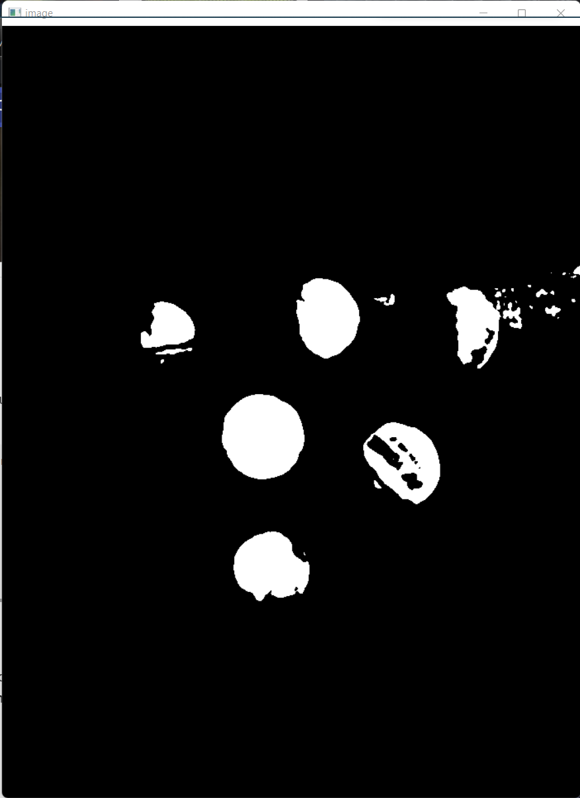
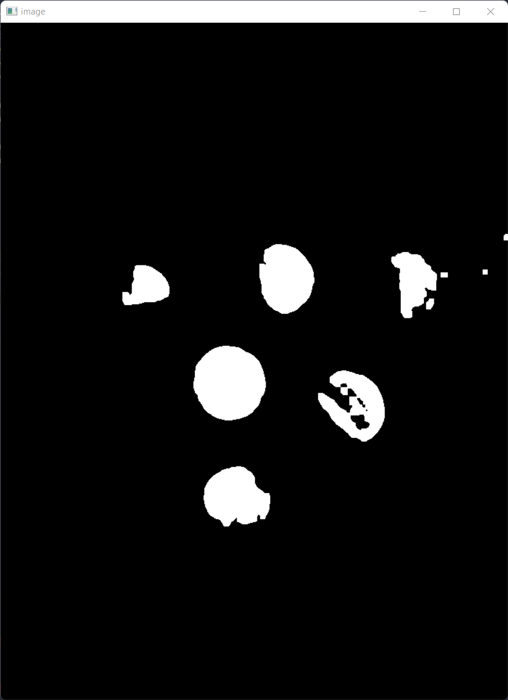
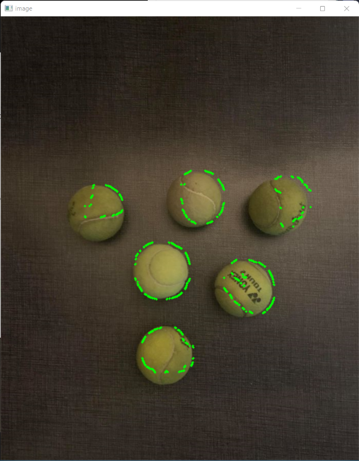
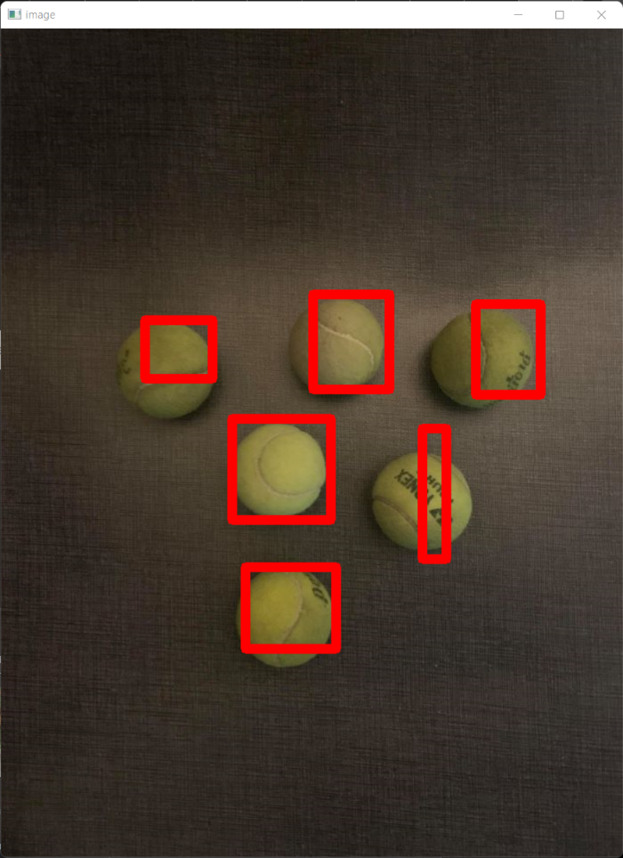

ECE 196 Intro to OpenCV
Written by Dillon Hicks
Quote
What is OpenCV?
OpenCV is a library of programming functions mainly aimed at real-time computer vision (CV)
Requirements
- Laptop with Anaconda installed and a webcam
- OR RPi with camera attached
Slides
Setup
Before we get started, we need to set up all of the libraries necessary for this lecture. With your conda environment activated, install the necesary dependencies by typing the below coimmands into your terminal window.
OpenCV
pip install opencv-contrib-python
imutils (image utility module from Adrian Rosebrock - https://www.pyimagesearch.com)
pip install imutils
NumPy (For efficient multi-dimensional python arrays)
pip install numpy
To test these installations, create a new python script and run it with the following import statements:
Info
When installing OpenCV from pip, we get the default version, which doesn't have many useful add-ons such as CUDA-acceleration (Nvidia GPU acceleration). We can compile OpenCV from directly from source, but this installation takes a very long time (hours in many cases). However, compiling from source may be preferable when GPU acceleration is available to speed up processing times.
Operating on Images
The first obvious step for basic computer vision functions is opening single images. There are some functions that make this very easy to do.
For this guide we will use this sample image:

Opening Images
You can read an image from you computer into python as a numpy array using imread(). We can then do any numpy operations that you could normally do on this array.
We can then open this image in a separate window using imshow().
You may then notice that it is a bit tough to close this window. To close this window easily, you can set a wait key using waitKey(), and close OpenCV windows using destroyAllWindows(). If this wait key is pressed, then the next line will run and all windows will be destroyed (closed)
#If q is pressed during x milliseconds wait time, close all opencv windows
x = 0
if cv2.waitKey(x) & 0xFF == ord('q'):
cv2.destroyAllWindows()
Warning
For WSL (Windows Subsystem for Linux), you may get errors when plotting using imshow() as GUI apps are not currently supported unless you are on the newest version of WSL and have the proper drivers installed. It is recomended that your native OS is used for compatibility with camera hardware.
Capturing Video
We can also create a video source as well for us to read videos from the onboard camera.
We can first make a video object using VideoCapture() from which to grab frames from at every iteration of a while loops using read(). Combining this with imshow() and other flow control functions, we can display images from our camera feed.
#The following recipe gets a numpy array at each iteration of the while loop
video = cv2.VideoCapture(0)
while True:
ret, frame = video.read()
# Display the resulting frame
cv2.imshow('image', frame)
if cv2.waitKey(1) & 0xFF == ord('q'):
break
cv2.destroyAllWindows()
Warning
If you try to run the code above on a RPi using the RPi camera, it will not work by default. Make sure to enable the camera by following the following steps:
- Enable the camera using
sudo-raspi-config - Install picamera using
pip install "picamera[array]"and use the picamera functions for reading pictures
Drawing on images
In addition, you can also resize an image to more easily display it, or reduce computation time for smaller images. From Adrian Rosebrock's library imutils, we can resize an image to a width of pixels with
In addition, we can also place shapes onto images using several built in functions. Below, we use the circle() and rectangle() functions, but many more are available in this OpenCV documentation
#places a green circle at (100,100) with r = 25 with a thickness of 10 pixels
cv2.circle(my_image, (100,100), 25, (0,255,0), 10)
cv2.rectangle(my_image, (400,300), (500,400), (0,0,255), 10)

Text
To add more information to images, we can also add text. This is fairly easy to do as we can simply get a font built into OpenCV, and putText() to place a given string at a location.
font = cv2.FONT_HERSHEY_DUPLEX
cv2.putText(frame, text_string, location, font, fontscale, color, thickness)
For example, for the below image, the code used was:
font = cv2.FONT_HERSHEY_DUPLEX
cv2.putText(frame, "ECE 196 Rocks", (100,100), font, 1, (0,255,0), 3)

Question
Exercise 1
Combine all of the following functions above to open an image and do some modifications to it!
- Open an image of your choice and show it in a window that you can close,
- Resize the image to 900 pixels wide
- Draw a rectangle at the center of the image, and place a line of text above that square
Facial Detection
Next up, let's go over basic Facial Detection.
Facial detection is a fun task as it allows us to see if any faces are in our images. This is done using a Haar Cascade Classifier. This works by making many small ML classifiers that are then cascaded together to detect small visual features, such as those in the image below, for certain objects. These features are shown below for facial detection. In this case, these Haar Cascade Classifiers are trained to detect faces, but these classifiers can detect many different types of objects.

Since we aren't worrying about ML portions in this lecture, we won't go too in to detail, but OpenCV allows us to implement these algorithms without knowing anything about ML to accomplish cool tasks!
First, let's look at what XMLs built in to OpenCV can be used to detect faces.
Note
From the above Github link, you may notice that there are many different trained models for different detection tasks. You can interchange these XMLs to accomplish many tasks, including body, eye, and face detection.
Once we load the cascade classifier, we can then detect the faces, which are returned from the detectMultiScale function, from which we can get the top left corner and width and height of the bounding box around each detected object.
Question
Exercise 2
Now it's time to do some cooler things!
- From your video source, detect the faces in each frame and place a rectangle around each face. Test that this works by detecting your face in your video.
Hint: use cv2.rectangle and use the w, and h, the width and height, respectively, to offset the rectangle from the top corner. i.e. (x+w,y+h)
If you have extra time, try to use some of the other Haar classifiers to detect different objects!


Image Processing
Although facial detection is an easy task to do with OpenCV, not all tasks are as straightforward. One task that is essential to any computer vision workflow is Image Processing.
We process our images for one main reason, to make them easier for our algorithms we develop to analyze. One main way we can do this is to remove Noise. Noise is essentially unwanted data in our images, and this noise can greatly affect how our algorithms perform. Thus, it is essential to reduce the amount of noise in our images.
Blur
One important way to remove noise is Blurring. Standard intuition may tell you that blurring an image makes it worse, which to the naked eye, is true! However, the human brain is made to ignore small bits of noise in images, but computers are not. Blurring can get rid of small details that are ultimately unnecessary to the performance of our algorithms, limiting the ability of small details to "trick" our algorithms.
One common blurring algorithm is the Gaussian Blur, which we will use in this lecture to "smooth" our image.
For other blurring algorithms, feel free to check out this tutorial by Adrian Rosebrock
#applied a gaussian blur with a standard deviation of 11
frame = cv2.GaussianBlur(frame, (11, 11), 0)
| Unblurred Image | Blurred Image |
|---|---|
|  |  |
Thresholding
Thresholding can be used to create a mask
We can also set an upper and lower boundary for our threshold. Thus, the output mask would be 0 if it is outside these lower and upper bounds, and 1 otherwise
# Tuple containing 2 lists of BGR pixel values denoting minimum and maximum example red values
boundaries = ([17, 17, 150], [125, 125, 255])
# Setting lower and upper bounds
lower = np.array(boundaries[0], dtype = "uint8")
upper = np.array(boundaries[1], dtype = "uint8")
# Transforms the above boundaries into numpy arrays
mask = cv2.inRange(frame, lower, upper)
Morpological Transformations
Once we convert our images to masks, our ability to remove noise doesn't stop there, we can use Morpological Transformations, most notably, Erosions and Dilations to further remove noise in our mask.
| Original Image | Dilated Image | Eroded Image |
|---|---|---|
 |
 |
These morphological transformations work to change the images shape. They can remove noise, and further highlight useful features in our images.
There are many other morphological Transformations available - see here.
We can apply these transformations to our mask with the following code.
#Applies an erosion, followed by a dilation with 3 iterations each (the more iterations, the stronger the transformation)
mask = cv2.erode(mask, None, iterations=3)
mask = cv2.dilate(mask, None, iterations=3)
| Mask without Morpological Transformations | Mask with Morpological Transformations |
|---|---|
|  |  |
Contour Detection
From the mask, we can get the contours of the mask, or the boundary of each masked object.
contours = cv2.findContours(mask.copy(), cv2.RETR_EXTERNAL,cv2.CHAIN_APPROX_SIMPLE)
contours = imutils.grab_contours(contours)
for contour in contours:
cv2.drawContours(frame, contour, -1, (0,255,0), 3)

Next, using minAreaRect(), we can get the minimum area rectangle that covers the contours.
Question
Exercise 3
Take the following image and detect the tennis balls!
- Apply a blur to the image
- Threshold the image.
- Erode, then dialte the image
- Plot a box around each tennis ball
Extra: Experiment more with the thresholds and try it on a video! (Ask Dillon for a tennis ball)
| Original Image | Detected Tennis Balls |
|---|---|
|  |